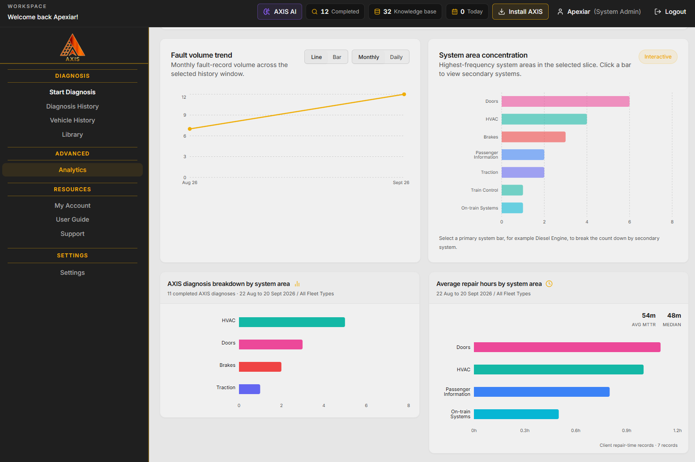

Rail
Connect fleet intelligence, infrastructure inspection and engineering support across the asset lifecycle.
Explore rail sensing programmes →Aerial inspection & vegetation intelligence →Explore all rail capabilities →APEXIAR
Apexiar is an innovative technology company providing advanced software, connected sensing and aerial intelligence for rail, emergency response and critical infrastructure.
Connected technology illustration
Our capabilities
From sensing to insight to action, Apexiar connects people, assets and information around the operational requirement.

Turn operational data into clearer, faster decisions.

Connected sensing and integration for physical assets.

Visual and thermal evidence to see more and understand sooner.

Practical expertise from engineering strategy to operations.
Capture detailed imagery, locate potential issues and support informed maintenance decisions.

Precision capture.
Detailed imagery of critical infrastructure.
Detailed aerial imagery provides evidence for engineering review and informed maintenance decisions.
Illustrative inspection workflow


Apexiar was founded with a single mission: to deliver real world software systems for complex operational environments where reliability, safety, and trust are essential.
Where we work
Connect fleet intelligence, infrastructure inspection and engineering support across the asset lifecycle.
Explore rail sensing programmes →Aerial inspection & vegetation intelligence →Explore all rail capabilities →Bring incident records, risk information and aerial evidence into operational planning and response.
Explore Prism →Visual & thermal intelligence →Explore fire & emergency capabilities →Understand asset condition, coordinate maintenance and plan the engineering work that supports reliable operations.
Explore Artemis →Engineering & lifecycle support →Explore energy & infrastructure capabilities →Selected technologies

AI Powered Maintenance Intelligence Platform
Explore AXIS →
Asset management and coordinated maintenance.
Explore Artemis →
Fire safety and risk intelligence.
Explore Prism →The complete product tile collection, detailed portfolio and software expertise are preserved on Software & Intelligence.
“We were genuinely impressed by the quality of AMIS and the support provided by Apexiar. The platform has transformed how our client captures incidents, manages information and turns data into meaningful insight. The team were responsive, knowledgeable and clearly understood the needs of a regulated operational industry… highly recommended.”
From requirement to operation
Define the challenge, operating environment and evidence needed with your team.
Combine software, sensing and engineering around the required outcome.
Test against operational requirements and build the evidence for assurance and required approvals.
Integrate, train and support your teams as the capability enters service.
Bring us the challenge. We will help define the right combination of software, connected systems, aerial intelligence and engineering support.